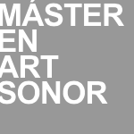

<!DOCTYPE html>
<html lang="en">
<head>
	<meta charset="utf-8" />
	<meta name="viewport" content="width=device-width, initial-scale=1, shrink-to-fit=no" />

	<title>About</title>

	<meta property="og:title" content="ICLC 2025 - About" />
    <meta property="og:type" content="website" />
    <meta property="og:url" content="https://iclc.toplap.org/2025/about.html" />
	<meta property="og:description" content="International Conference on Live Coding 2025, May 27 - 31, Barcelona" />
	
    <meta property="og:image" content="./assets/img/2025logocolor.png" />
    <meta property="og:image:type" content="image/png" />
    <meta property="og:image:width" content="1200" />
    <meta property="og:image:height" content="630" />

    <meta property="og:locale" content="en_US" />   

	<link href="https://fonts.googleapis.com/css2?family=Exo:ital,wght@0,400;0,500;0,700;1,400;1,700&amp;display=swap" rel="stylesheet">
	
	<!-- Font Awesome icons (free version)-->
	<script src="https://use.fontawesome.com/releases/v6.1.0/js/all.js" crossorigin="anonymous"></script>

	<!-- Core theme CSS (includes Bootstrap)-->
	<link href="css/styles.css" rel="stylesheet" />
</head>
<body id="page-top">
	<!-- Generate the main menu bar -->
	<script src="./js/scripts-extension.js?cachebust=1020019"></script>
	<script>makeMenu();</script>

	<section class="about-section" id="about"></section>
	<br><br><br><br>
	<script>
		// add a paragraph, arguments: section-id, header, text

		

		paragraph('about', 'About',
			  `The International Conference on Live Coding (ICLC) is dedicated to practices and research focused on technologies and philosophies that interpret the use of computer code as gesture within the context of live performances. In its previous editions, the community has offered important insights into this practice from many diverse perspectives &ndash; technical, philosophical, educational, political and more.<br><br>
ICLC 2025 takes place in Barcelona from May 27 to 31, 2025, about ten years after the first ICLC in 2015. We encourage our community to leverage its multidisciplinary strengths and discover new boundaries to expand, or to dissolve.
        `);

		paragraph('about', 'Who we are', 
		`The 2025 edition of ICLC is organized by members of Barcelona's local live coding community (the large majority of which are volunteers) and invited guests from other live coding communities and institutions around the world.</p>

        <p><strong>Organizing Partners:</strong> <a href="https://www.toplap.cat/">TOPLAP Barcelona</a>, and <a href="https://axolot.cat/">Axolot Collective</a></p>

        <p><strong>Institutional Partner:</strong> <a href="https://www.uoc.edu/">Universitat Oberta de Catalunya (UOC)</a></p>

        <p><strong>Location: Barcelona, Catalunya</strong></p>
		
        <!-- <p>Live coding performances during ICLC 2025 will take place at a diverse selection of venues around Barcelona. Please check our <a href="/venues.html">Venues</a> page.-->`);


		paragraph('about', "ICLC 2025 Programming Committee",
		`
		<br>
			<strong>General Chair</strong>
			<ul style="margin-top: 10px;">
				<li>Enric Mor &ndash; Universitat Oberta de Catalunya (UOC)</li>
			</ul>
<br>
			<strong>Papers Committee</strong>
			<ul style="margin-top: 10px;">
				<li>Julia Múgica Gallart (chair) &ndash; TOPLAP BCN / Axolot.cat</li>
				<li>Enric Mor &ndash; Universitat Oberta de Catalunya (UOC)</li>
				<li>Anna Xambó &ndash; Queen Mary University of London</li>
				<li>Hernani Villaseñor-Ramírez &ndash; UAM Lerma</li>
				<li>Gerard Roma &ndash; University of West London</li>
				<li>Iván Paz &ndash; TOPLAP BCN</li>
				<li>Niklas Reppel &ndash; TOPLAP BCN</li>
			</ul>
<br>
			<strong>Performance Committee</strong>
			<ul style="margin-top: 10px;">
				<li>Citlali Hernández (co-chair) &ndash; TOPLAP BCN / UOC / Axolot.cat</li>
				<li>Glen Fraser (co-chair) &ndash; TOPLAP BCN</li>
				<li>Jia Liu &ndash; University of Music Karlsruhe / TOPLAP Karlsruhe</li>
				<li>Lina Bautista &ndash; TOPLAP BCN / Axolot.cat</li>
    			<li>Irma Vilà &ndash; Universitat Oberta de Catalunya (UOC)</li>
    			<li>Ramón Casamajó &ndash; TOPLAP BCN</li>
			</ul>
<br>
			<strong>Workshop Committee</strong>
			<ul style="margin-top: 10px;">
				<li>Bernat Romagosa (chair) &ndash; TOPLAP BCN / SAP</li>
				<li>Alfonso Pardo &ndash; TOPLAP BCN</li>
				<li>Joan Queralt &ndash; TOPLAP BCN</li>
				<li>Maia Francisco &ndash; TOPLAP BCN</li>
				<li>Mònica Moreno &ndash; TOPLAP BCN</li>
				<li>Roger Pibernat &ndash; TOPLAP BCN / Axolot.cat</li>
				<li>Florencia Alonso &ndash; Robert Schumann Hochschule</li>
			</ul>
<br>
			<strong>Installation Committee</strong>
			<ul style="margin-top: 10px;">
				<li>Irma Vilà (co-chair) &ndash; UOC</li>
				<li>Roger Pibernat (co-chair) &ndash; TOPLAP BCN / Axolot.cat</li>
    			<li>Enric Mor - TOPLAP BCN / UOC</li>
			</ul>
<br>


			<strong>Satellite Events Coordinator</strong>
			<ul style="margin-top: 10px;">
				<li>Alfonso Pardo &ndash; TOPLAP BCN</li>
			</ul>
			<br>
			<strong>Communication Support</strong>
			<ul style="margin-top: 10px;">
				<li>Alicia Champlin &ndash; TOPLAP BCN</li>
			</ul>
			<br>
			<strong>Web Support</strong>
			<ul style="margin-top: 10px;">
				<li>Diego Villaseñor &ndash; Planeta tierra</li>
			</ul>
			<br>
			<strong>Graphic Design</strong>
			<ul style="margin-top: 10px;">
				<li>Toni Jaume &ndash; TOPLAP BCN</li>
			</ul>

		
		`
		)

		paragraph('about', 'Code of Conduct', `All participants are expected to read and adhere to the <a href="code-of-conduct.html">ICLC 2025 official Code of Conduct</a>, not only at the Conference but in all related proceedings and interactions with the ICLC community, online or in person.`);

		paragraph('about', 'Environmental Statement', 
		`We invite everyone to reflect on the impact that our research and practice has on our environment and ecosystems. Acknowledging this, we are incorporating sustainability and conservation criteria as guidelines for the conference planning. We invite everyone to take this into consideration before and after the conference. In the spirit of coming together for a live event, we want to encourage in-person attendance, and also encourage that attendees joining us make choices to minimize the impact of their travel with low-carbon options whenever possible. We also commit to fostering connections among attendees and nearby satellite events, to make the most of long distance travel with opportunities to turn your visit into a mini-tour. The presentations and performances of the conference will be live-streamed whenever possible. We are also open to hosting remote presentations when this is the best option.`)

		paragraph('about', 'Organized by',
		`<br>
		<a href="https://www.toplap.cat"></a>
		<a href="https://www.uoc.edu/"></a>
		<a href="https://axolot.cat/"></a>
		
		<br>
		`
		);

		
		 paragraph('about', 'Supported by',
		`<br>
		
		<br><br>
		`
		);

		 paragraph('about', 'Thanks to',
		`<br>
		<a href="https://www.ub.edu/masterartsonor_temp/en/master-studies-in-sound-art/"></a>
		
		<br><br>
		`
		);

			
	

	</script>

	<script>
		socials();
		footer();
	</script>

	<!-- Bootstrap core JS-->
	<script src="https://cdn.jsdelivr.net/npm/bootstrap@5.1.3/dist/js/bootstrap.bundle.min.js"></script>
	<!-- Core theme JS-->
	<script src="js/scripts.js"></script>
	<!-- <script src="https://cdn.startbootstrap.com/sb-forms-latest.js"></script> -->
</body>
</html>
